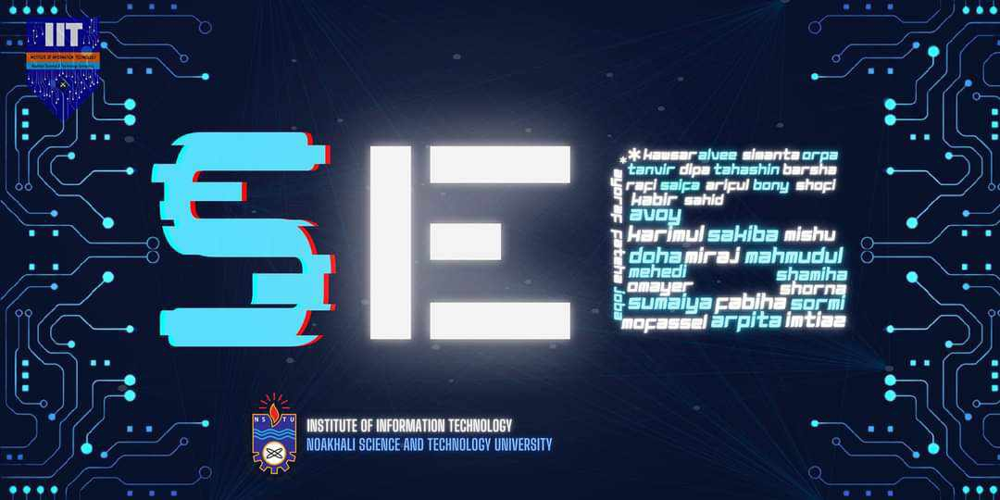

#include <stdio.h>
int main()
{
printf("Dear IIT,\\n\\n");
printf("In the journey of digitalization, we dreamt of, \\\"Made in Bangladesh, Made for the world.\\\"\\n");
printf("In the journey of digitalization, we will build it and then pray for it. We will be there for sure, InshaAllah, to build your dream with the magic of coding.\\n");
printf("You said, \\\"S=Software\\\" & I heard, \\\"S=Success.\\\"\\n");
printf("What can software do for you?\\n");
printf("Just to let you know, let the journey begin from here...\\n\\n");
printf("#NSTU_18th\\n");
printf("#IIT_6th\\n");
printf("#SofTwaRE_Engineering er polaPAIN\\n");
return 0;
}
Dear IIT,
In the journey of digitalization, we dreamt of, "Made in Bangladesh, Made for the world."
In the journey of digitalization, we will build it and then pray for it. We will be there for sure, InshaAllah, to build your dream with the magic of coding.
You said, "S=Software" & I heard, "S=Success."
What can software do for you?
Just to let you know, let the journey begin from here...
#NSTU_18th
#IIT_6th
#SofTwaRE_Engineering er polaPAIN
Sakiba Belal
Md. Shamsuddoha